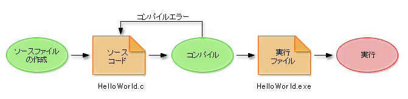

この講義ではプログラミング初学者が、自身の研究活動のためにC言語によるプログラミングが可能になることを目的としています。受講者の皆さんには、講義を通して研究の目的達成手段としてのプログラミング手法を習得してもらうこととなります。このため、プログラミングの知識については、情報科学の視点ではなく「○○を実現するために必要な機能」という視点で解説をしていきます。
C言語に限らず、プログラミング全般にいえることですが、単に文法を理解しただけでは実際的なプログラムを組むことはできません。本講義では、文法の解説にとどまらず、実際的な使い方やサンプルプログラムをできるだけ例示しながら解説をしていきます。最終的には以下のことを目標とします。
本講義で扱うC言語の学習範囲は、基本的にオペレーティングシステムに依存しません。しかし、開発環境の利用方法についてはオペレーティングシステムに よって異なることがあります。本講義では Windows XP あるいは Mac OS X での演習を前提とします。また C99 規格に対応したコンパイラを使うことを想定していますが、C言語の解説自体は厳密に C99 規格に沿ったものではありません。「ふつうの」C言語の解説とでもいうような内容になっています。
本講義は 13 回構成となります。それぞれの回の概要は以下のとおりです。
今回は、プログラミングのための環境作りと簡単なプログラムを作成します。 これをとおして以下のことを理解できるようにします。
本講義の最初の内容として、プログラミング環境を用意します。一般にプログラミングを行うためには、プログラミングのための環境を用意する必要があります。本講義において、プログラミング環境の用意は大きく以下の二つの作業に分けられます。
手順は Windows 環境と Mac OS 環境で異なりますので、それぞれ以下のリンク先のページを参考にしてインストールと Hello World プログラムのコンパイル〜実行を行ってください。
プログラミングを始める前に、プログラミングとはどのような作業なのか、その仕組みを説明します。
プログラミング言語とは？
プログラミング言語とは、コンピュータに計算を行わせる手順を記述するための特殊な言語を指します。 プログラミング言語は、コンピュータが処理しやすい言語となっているため、我々が日常利用してる日本語や英語のような自然言語とはかなり異なる言語になっています。（比較的英語に似た文法の言語が多いと言われていますが。）プログラミング言語には、用途や考え方によって最適化された、さまざまな種類が作成されています。（古くは COBOL, Fortran など、最新では Ruby, Python, Groovy といった言語です。）ここでは 1960 年末期から 1970 年初めに誕生し、現在に至るまで幅広く使われ続けているC言語を用いることにします。
プログラミングの流れ
C言語によるプログラミングは大まかに以下の手順に分かれます。 それぞれの手順について説明します。
- ソースコードを作成する
- コンパイルしてコンピュータが解釈可能な実行ファイルへ翻訳する
- 実行可能ファイルを実行する
プログラミング言語によって多少変化はありますが、基本的な流れはどの言語でも上記のとおりです。
（クリックで図が拡大）
ソースファイルの作成
C言語プログラムが書かれたファイルのことをソースファイルと呼びます。C言語のソースファイルは拡張子を c にするのが一般的です。 さきほど作成した Hello World プログラムでは、ソースファイルの名前は HelloWorld.c になっています。
ソースファイルは一般的なテキストファイルですが、打ち込む文字は文字列の中以外は半角文字である必要があります。全角を入れてしまうと次に説明するコンパイルエラーが発生し、実行ファイルが作成されません。特に全角空白は日本語入力を ON にした状態では誤って入力しやすいため、注意してください。コンパイルして実行可能ファイルを作成する
ソースファイルに記述されたプログラミング言語は、そのままではコンピュータが実行することはできません。 ソースファイルを実行可能ファイルに変換して、はじめてコンピュータで実行ができます。このソースファイルを解釈して、実行ファイルへ変換する作業のことをコンパイルと呼びます。またコンパイルを実行するプログラムのことをコンパイラと呼び、C言語用のコンパイラはしばしばCコンパイラと呼ばれます。
※実行ファイルとは Windows では拡張子が exe のファイルのことです。
ソースファイルの内容にC言語の規則に違反している部分があると、コンパイラはコンパイルエラーとして、エラーメッセージを表示し、実行ファイルの作成を中止してしまいます。エラーメッセージから、エラーの原因やエラーになった行番号がわかるので、コンパイルエラーがなくなるまでソースファイルを編集して直さなければなりません。
また、一般にソースファイルの内容もしくはその一部を、ソースコードと呼びます。
また、コンパイラはコンパイルエラー以外にも、警告 (warning) と呼ばれるメッセージを表示することがあります。このメッセージは、プログラムが構文的には間違っていないものの、正しく動作しない可能性があるときに表示されます。本講義で紹介するソースコードでも、コンパイラが警告を表示する場合がありますが、本講義では簡略化のために警告には対処しないこととします。実行可能ファイルを実行する
コンパイルが成功すると、実行可能ファイルが作成されます。 実行可能ファイルは、通常のアプリケーションと同じように実行させることができます (というより、通常のアプリケーションの実体は実行可能ファイルです)。一般に実行可能ファイルには、ソースファイルと同じ名前をつければよいでしょう。 たとえば、ソースファイルの名前が HelloWorld.c であれば、実行可能ファイルの名前は HelloWorld.exe とすればよいでしょう。
統合開発環境
プログラミングには 3 つの手順に分かれることを説明しました。これらの手順を効率良く実施するための補助をしてくれるのが統合開発環境です。統合開発環境を使えばソースコードのコンパイル、エラー部分の表示、実行可能ファイルの実行といった作業を効率よく実施することができるため、プログラムの作成に集中することができます。
C言語の統合開発環境にはさまざまなものがありますが、本講義では Windows, MacOS X, Linux などさまざまな環境で利用できる Eclipse + CDTを利用します。
参考文献
ソースコードから実行可能ファイルが作成される詳細なしくみや、実行可能ファイルの中身を知りたいときは、以下の参考文献が役に立つかもしれません。
『プログラムはなぜ動くのか？第 2 版 知っておきたいプログラミングの基礎知識』、矢沢 久雄、日経ソフトウェア、2007
冒頭の「プログラムを動かしてみる」で入力したソースコードを例に、C言語の基本文法について説明します。
#include <stdio.h> int main() { printf("Hello, World\n"); return 0; }1 行目 プリプロセッサ命令
1 行目はプリプロセッサ命令と呼ばれる特殊な命令です。初学者にとっては本質的な部分ではないので、本講義では解説しません。「プログラムの先頭には必ずこの 1 行を書く」というルールと理解してください。
3 行目 main 関数
3 行目の
int main() {から 6 行目の
}までは、main 関数の定義です。C言語で書かれたプログラムをコンパイルして実行すると、（他に別な関数が定義されていても）必ずこの main 関数の計算が実行されることになっています。したがって、やりたい計算をおこなうように main 関数を定義する作業が、すなわちプログラムを書く作業となります。main 関数の計算内容は { と } の間に書きます。
なお、ここでいう関数とは、数学における関数とは意味が少し異なるので注意してください。 C言語における関数は「やらせたい計算内容をまとめたもの」です。 関数の詳細については第 3 回で説明します。
4 行目 printf 関数
main 関数が最初に実行する「計算」は字句の表示です。
Hello, Worldという一行を表示します。この行のような文字の並びのことを、C言語では文字列といいます。つまり、最初に実行する「計算」は文字列の表示なのです。
文字列の表示が「計算」であるとは奇妙に感じるかもしれません。コンピュータにとっては計算に違いないのですが、無用の混乱をさけるため、「計算」といわずに素直に「処理」という言い方もあります。
main 関数が最初に実行する処理は字句の表示です。
この方がわかりよいでしょうか？
どういう言い方をするにせよ、文字列を表示するためには、printf 関数をコンピュータに計算（処理）させます。printf に続く括弧の中が関数の引数で、printf 関数を計算させると、この引数の文字列が表示されます。プログラムの 4 行目は、main 関数が最初に計算するのが printf 関数であることを指示しています。
文字列
C言語のプログラム中では、"（ダブルクオーテーション）で囲まれた文字の並びが文字列です。 " で囲った中には、改行以外の自由な文字を書くことができます。漢字などの全角文字も書けます。改行文字を含めたい場合には \n（円マーク、小文字のn）で表現します。つまり、"Hello, World\n" は、表示すると
Hello, Worldが表示された後に改行される文字列です。歴史的な理由により、行末に改行文字という見えない特別な文字を表示すると、改行（行替え）がおこり、続いておこなわれる表示が下の行に表示されるようになります。
なお、Mac OS 環境では、「\n」は「バックスラッシュ、小文字のn」と表示されますのでそのように読みかえてください。Mac OS でバックスラッシュを入力するには、Option + ¥ キーを押下します（使用しているソフトウェアによっては Option キーは不要）。文の区切り
C言語のプログラムでは、一つ分の処理の記述を文と呼びます。例えば
printf("Hello, World\n");は文です。
文の末尾（区切り）を示すのが ;（セミコロン）です。C言語では文の最後に必ず ; を書きます。書かなければコンパイルエラーになります。なお 1 行にいくつもの文を続けて書くこともできますが、一般には読みやすさを重視して、1 行には 1 文しか書きません。printf で数値を表示
printf 関数は、続く括弧の中に書く引数を工夫すれば、単純な文字列以外に数値などさまざまな情報を表示することができます。たとえば、printf 関数の括弧の中の文字列に %d が含まれていると、printf 関数は 2 番目の引数の値で 1 番目の引数の文字列の中の %d を置き換えて表示します。
printf("There are %d eggs.\n", 3); printf("There are %d eggs.\n", 3 + 5);この例ではそれぞれThere are 3 eggs. There are 8 eggs.と表示されます。printf 関数の 2 番目の引数が計算式である場合は、その計算結果の値で %d を置き換えます。これは計算結果の表示に便利です。
5 行目 return 文
関数の値（計算結果）を決めるのが return 文です。 C言語における関数の値は一般的に戻り値と呼ばれます。関数の計算が始まると、先頭の文から書かれた計算を順に実行してゆきますが、return 文で計算は終わりです。return に続いて書かれた値が、その関数の最終的な値となります。
ここでは
return 0;となっているので関数の値は必ず 0 です。main 関数の主要な処理は、文字列を表示することでしたから、実は戻り値はなんでもよいわけですが、ここでは慣例にしたがって 0 にします。
値が常に 0 の関数など、わざわざ計算しなくてもよいわけですが、上のプログラムの場合、計算し直すたびに、計算の副作用として文字列が表示されます。ですから、こんな関数でも計算することに意義があるのです。
ソースコードの読みやすさ
多くのプログラミング言語には、人間がソースコードを読みやすくするための方法が用意されています。このためにC言語が用意している方法のうち、ここでは インデントとコメントについて紹介します。どちらも人間のためのものですから、使っても使わなくても、プログラムの意味（プログラムを実行したときに、ど ういう計算・処理がおこなわれるか）は変わりません。
インデント
インデントとはプログラムを読みやすくするために、関連する行ごとに段をつけて先頭の桁をそろえることです。 C言語では、改行、半角スペース（空白）とタブ文字は何個あっても半角スペース１個と同じと見なされるため、上で示したプログラムは次のように書き直しても同じ意味になります。
#includeint main() { printf("Hello, World\n"); return 0; } しかし段をつけた方が処理のかたまりを認識しやすいため、最初に示したように関数内の処理などは段をつけて先頭の桁を揃えるようにするのが一般的です。このような桁揃えのことをインデント (indentation) と呼びます。
コメント
複雑なプログラムになると、一読しただけではどのような処理をするのかが分かりにくくなります。 そこでプログラムの自由な位置に自由に説明文を書き込める機能が用意されています。これをコメントといいます。
C言語では /* と */ で囲まれた部分は、ないものとして扱われます。
そのため、この間には以下のように自由にプログラムの説明を記述できます。
#include <stdio.h> /* Hello Worldを表示するプログラム */ int main() { printf("Hello, World\n"); /* 文字を表示するプログラム */ return 0; }まとめ
以上で、Hello World プログラムの内容をすべて説明しました。
次回以降もC言語のさまざまな文法を説明していきますが、プログラムの大まかな構成は今回の内容ですべて説明できます。もしプログラムの構成が分からなくなった場合には、もう一度今回の内容を読み直してください。
今回の内容を踏まえて、以下の演習問題に取り組んでください。
演習 1−1
以下のプログラムをコンパイル・実行すると、どのような表示がされるか確認してください。
#include <stdio.h> int main() { printf("2 * 8 = %d\n", 2 * 8); printf("36 = %d * %d\n", 3, 12); return 0; }演習 1−2
以下のプログラムをコンパイルするとコンパイルエラーが発生します。 コンパイルエラーが発生する理由を考えて、修正方法を考えてください。
#include <stdio.h> int main() { printf("The quick brown fox jumps over the lazy dog."); return 0; }演習 1−3
以下のプログラムと同じ表示をするプログラムを printf 関数を 1 回しか使わずに記述してください。
ヒント: \n は文字列の途中に書くこともできます。
#include <stdio.h> int main() { printf("%d apples\n", 4); printf("%d apples\n", 9); printf("%d apples\n", 16); return 0;
Copyright 2009-2011 the Compview project,
Tokyo Institute of Technology. All rights reserved.
{kind=link}